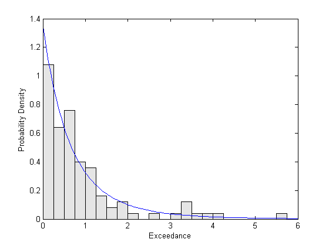
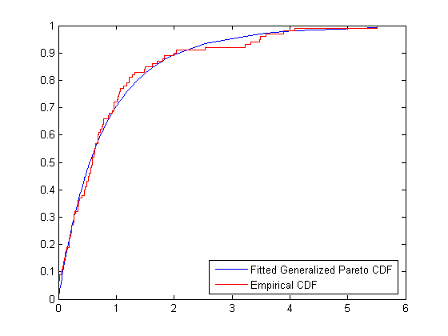
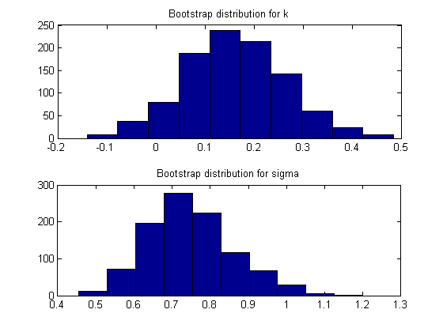
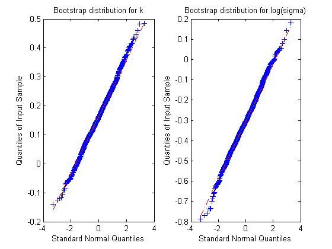

Fitting a parametric distribution to data sometimes results in a model that agrees well with the data in high density regions, but poorly in areas of low density. For unimodal distributions, such as the normal or Student's t, these regions are known as the "tails" of the distribution. One reason why a model might fit poorly in the tails is that by definition, there are fewer data in the tails on which to base a choice of model, and so models are often chosen based on their ability to fit data near the mode. Another reason might be that the distribution of real data is often more complicated than the usual parametric models.
However, in many applications, fitting the data in the tail is the main concern. The Generalized Pareto Distribution (GPD) was developed as a distribution that can model tails of a wide variety of distributions, based on theoretical arguments. One approach to distribution fitting that involves the GPD is to use a non-parametric fit (the empirical cumulative distribution function, for example) in regions where there are many observations, and to fit the GPD to the tail(s) of the data.
In this example, we'll demonstrate how to fit the GPD to tail data, using functions in the Statistics Toolbox for fitting custom distributions by maximum likelihood.
Real world applications for the GPD include modelling extremes of stock market returns, and modelling extreme floods. For this example, we'll use simulated data, generated from a Student's t distribution with 5 degrees of freedom. We'll take the upper 5% tail of 2000 observations from the t distribution, and then subtract off the 95% quantile. That subtraction transforms the tail data into what are known as exceedances.
randn('state',0); rand('state',0); x = trnd(5,2000,1); q = quantile(x,.95); y = x(x>q) - q; n = numel(y)
n = 100
The GPD is parameterized with a scale parameter sigma, and a shape parameter, k. k is also known as the "tail index" parameter, and determines the rate at which the distribution falls off.
The GPD is defined for 0 < sigma, -Inf < k < Inf, however, maximum likelihood estimation is problematic when k < -1/2. Fortunately, those cases correspond to fitting tails from distributions like the uniform or triangular, and so will not present a problem here. To ensure that the parameter estimates remain in the appropriate region during the iterative estimation algorithm, we will define lower bounds of -0.5 for k, and 0 for sigma. Upper bounds will default to infinity. Interval bounds such as these are known as "box constraints".
lowerBound = [-0.5 0.0];
Next, we will define a function to compute the GPD log-likelihood. The GPD is more than a single line, so we've created the function as a separate M file, gpnegloglike.m. The function takes as inputs a vector of values of the parameters k and sigma, and a data vector, and returns the negative of the log-likelihood. MLE _minimizes_ that negative log-likelihood.
type gpnegloglike.m
function nll = gpnegloglike(params, data, cens, freq)
%GPNEGLOGLIKE Negative log-likelihood for the Generalized Pareto Distribution.
% The input PARAMS is a vector containing the values of k and sigma at
% which to evaluate the log-likelihood. The input DATA contains the data
% which we are fitting. The inputs CENS and FREQ are not used in this
% example.
%
% Copyright 1984-2004 The MathWorks, Inc.
% $Revision: 1.1.4.1 $ $Date: 2004/03/22 23:55:06 $
k = params(1); % Tail index parameter
sigma = params(2); % Scale parameter
n = numel(data);
if abs(k) > eps
if k > 0 || max(data) < -sigma./k
% The log-likelihood is the log of the GPD probability density
% function. GPDnegloglike returns the negative of that.
nll = n*log(sigma) + ((k+1)./k) * sum(log1p((k./sigma)*data));
else
% We need to enforce non-box constraints on the parameters: the
% support of the GPD when k<0 is 0 < y < abs(sigma/k). Return a
% large value for the negative log-likelihood.
nll = realmax;
end
else
% The limit of the GPD as k->0 is an exponential. We have to handle
% that case explicity, otherwise the above calculation would try to
% compute (1/0) * log(1) == Inf*0, which results in a NaN value.
nll = n*log(sigma) + sum(data)./sigma;
end
We'll also need to provide an initial guess for the parameters. A value of k=0.3 corresponds to a tail that is roughly like a Student's t distribution with a fairly low number of degrees of freedom. The value sigma=1 is simply convenient. These values will turn out to be sufficient for this example; in more difficult problems, more sophisticated methods might be needed to choose good starting points.
startingGuess = [0.3 1.0];
Now all we have to do is call the function MLE, giving it the data, a handle to the log-likelihood function, the vector of starting values, and the lower bounds. MLE finds parameter values that minimize the negative log-likelihood, and returns those maximum likelihood estimates as a vector.
paramEsts = mle(y,'nloglf',@gpnegloglike,'start',startingGuess,'lower',lowerBound); kHat = paramEsts(1) % Tail index parameter sigmaHat = paramEsts(2) % Scale parameter
kHat =
0.1722
sigmaHat =
0.7359
To visually assess how good the fit is, we'll plot a scaled histogram of the tail data, overlayed with the density function of the GPD that we've estimated. The histogram is scaled so that the bar heights times their width sum to 1.
bins = 0:.25:7; h = bar(bins,histc(y,bins)/(length(y)*.25),'histc'); set(h,'FaceColor',[.9 .9 .9]); % When k < 0, the GPD is defined only for 0 < y < abs(sigma/k), so we'd % have to use min(1.1*max(y),abs(sigmaHat/kHat)) as the upper limit here if % the estimate of k were negative. ygrid = linspace(0,1.1*max(y),100); fgrid = (1./sigmaHat).*(1 + ygrid.*kHat./sigmaHat).^(-(kHat+1)./kHat); hold on; plot(ygrid,fgrid,'-'); hold off xlim([0,6]); xlabel('Exceedance'); ylabel('Probability Density');
We've used a fairly small bin width, so there is a good deal of noise in the histogram. Even so, the fitted density follows the shape of the data, and so the GPD model seems to be a good choice.
We can also compare the empirical CDF to the fitted CDF.
[F,yi] = ecdf(y); gpcdf = @(y,k,sigma) 1 - (1 + y.*k./sigma).^(-1/k); plot(yi,gpcdf(yi,kHat,sigmaHat),'-'); hold on; stairs(yi,F,'r'); hold off; legend('Fitted Generalized Pareto CDF','Empirical CDF','location','southeast');
To quantify the precision of the estimates, we'll use standard errors computed from the asymptotic covariance matrix of the maximum likelihood estimators. The function MLECOV computes a numerical approximation to that covariance matrix. Alternatively, we could have called MLE with two output arguments, and it would have returned confidence intervals for the parameters.
acov = mlecov(paramEsts, y, 'nloglf',@gpnegloglike);
stdErr = sqrt(diag(acov))
stdErr =
0.1231
0.1160
These standard errors indicate that the relative precision of the estimate for k is quite a bit lower that that for sigma -- its standard error is on the order of the estimate itself. Shape parameters are often difficult to estimate. It's important to keep in mind that the computations of these standard errors assumed that the GPD model is correct, and that we have enough data for the asymptotic approximation to the covariance matrix to hold.
Interpretation of these standard errors usually involves assuming that, if the same fit could repeated many times on data that came from the same source, the maximum likelihood estimates of the parameters would approximately follow a normal distribution. For example, the confidence intervals that the function MLE computes are based on these standard errors and a normality assumption.
However, that normal approximation may or may not be a good one. To assess how good it is, we can use a bootstrap simulation. We generate 1000 replicate datasets by resampling from the data, fit a GPD to each one, and save all the replicate estimates. We'll use the actual parameter estimates as a starting guess, in the hope that this choice will be close to most of the bootstrap replicate estimates, and will speed up convergence of the estimation algorithm.
replEsts = zeros(1000,2); for repl = 1:size(replEsts,1) replData = randsample(y,n,true); % resample from y, with replacement replEsts(repl,:) = mle(replData,'nloglf',@gpnegloglike, ... 'start',paramEsts,'lower',lowerBound); end
As a rough check on the sampling distribution of the parameter estimators, we can look at histograms of the bootstrap replicates.
subplot(2,1,1), hist(replEsts(:,1)); title('Bootstrap distribution for k'); subplot(2,1,2), hist(replEsts(:,2)); title('Bootstrap distribution for sigma');
The histogram of the replicate estimates for k appears to be only a little asymmetric, while that for the estimates of sigma definitely appears skewed to the right. A common remedy for that skewness is to estimate the parameter and its standard error on the log scale, where a normal approximation is better. A Q-Q plot is a better way to assess normality than a histogram, because non-normality shows up as points that do not approximately follow a straint line. Let's check that to see if the log transform for sigma is appropriate.
subplot(1,2,1), qqplot(replEsts(:,1)); title('Bootstrap distribution for k'); subplot(1,2,2), qqplot(log(replEsts(:,2))); title('Bootstrap distribution for log(sigma)');
On the log scale, the bootstrap replicate estimates for sigma appear acceptably close to a normal distribution. It's easy to modify gpnegloglike.m to use that transformation -- only the line that reads the current value of sigma from the parameter vector need be changed. This second version is in the M file gpnegloglike2.m.
type gpnegloglike2.m
function nll = gpnegloglike2(params, data, cens, freq)
%GPNEGLOGLIKE2 Negative log-likelihood for the GPD (log(sigma) parameterization).
% The input PARAMS is a vector containing the values of k and log(sigma) at
% which to evaluate the log-likelihood. The input DATA contains the data
% which we are fitting. The inputs CENS and FREQ are not used in this
% example.
%
% Copyright 1984-2004 The MathWorks, Inc.
% $Revision: 1.1.4.1 $ $Date: 2004/03/22 23:55:07 $
k = params(1); % Tail index parameter
sigma = exp(params(2)); % Scale parameter - transform from log scale
n = numel(data);
if abs(k) > eps
if k > 0 || max(data) < -sigma./k
% The log-likelihood is the log of the GPD probability density
% function. GPDnegloglike returns the negative of that.
nll = n*log(sigma) + ((k+1)./k) * sum(log1p((k./sigma)*data));
else
% We need to enforce non-box constraints on the parameters: the
% support of the GPD when k<0 is 0 < y < abs(sigma/k). Return a
% large value for the negative log-likelihood.
nll = realmax;
end
else
% The limit of the GPD as k->0 is an exponential. We have to handle
% that case explicity, otherwise the above calculation would try to
% compute (1/0) * log(1) == Inf*0, which results in a NaN value.
nll = n*log(sigma) + sum(data)./sigma;
end
Let's compare the results from fits using the two different parameterizations. First, repeat the fit of the model with sigma on the untransformed scale. This time, we'll get back confidence intervals as the second output.
[paramEsts,paramCI] = mle(y,'nloglf',@gpnegloglike,'start',startingGuess,'lower',lowerBound); kHat = paramEsts(1) % Tail index parameter sigmaHat = paramEsts(2) % Scale parameter
kHat =
0.1722
sigmaHat =
0.7359
kCI = paramCI(:,1) sigmaCI = paramCI(:,2)
kCI =
-0.0690
0.4135
sigmaCI =
0.5085
0.9633
Next, make the fit with sigma on the log scale.
lowerBound2 = [-0.5,-Inf]; startingGuess2 = [startingGuess(1) log(startingGuess(2))]; [paramEsts2,paramCI2] = mle(y,'nloglf',@gpnegloglike2,'start',startingGuess2,'lower',lowerBound2); kHat2 = paramEsts2(1) % Tail index parameter sigmaHat2 = exp(paramEsts2(2)) % Scale parameter, transform from log scale
kHat2 =
0.1722
sigmaHat2 =
0.7359
kCI2 = paramCI2(:,1)
sigmaCI2 = exp(paramCI2(:,2)) % Transform the CI as well
kCI2 =
-0.0690
0.4135
sigmaCI2 =
0.5403
1.0023
Notice that we've transformed both the estimate and the confidence interval for log(sigma) back to the original scale for sigma. The two sets of parameter estimates are the same, because maximum likelihood estimates are invariant with respect to monotonic transformations. The confidence intervals for sigma, however, are different, although not dramatically so. The confidence interval from the second parameterization is more tenable, because we found that the normal approximation appeared to be better on the log scale.